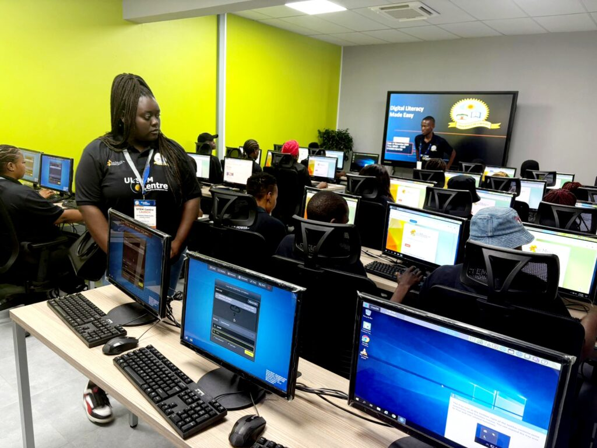

The following information is about the Department of Computer Science at the University of Limpopo. The department offers a range of programs and modules designed to equip students with the necessary skills and knowledge in the field of computer science. Our faculty members are experienced professionals dedicated to providing quality education and support to our students.
History
The academic offerings evolved alongside the broader structural transitions of the university (formerly part of the University of the North before the merger that formed the modern University of Limpopo in 2005).
Vision
Our vision is to be a leading department in computer science education and research, producing graduates who are well-equipped to contribute to the technological advancement of our society.
Mission
Our mission is to provide high-quality education in computer science, foster innovative research, and engage with the community to address real-world challenges through technology.
Location
The School of Mathematical and Computer Sciences at the University of Limpopo is located in the Maths Building (1st Floor) on the main Turfloop Campus in Mankweng, Polokwane, Limpopo Province, South Africa. The campus is easily accessible and provides a conducive environment for learning and research.
SCHOOL CONTACTS
Acting Director
Dr A. Takalani
Tel: (+27) 15 268 4894
Email: DOSSMCS@ul.ac.za
Senior Secretary
Ms. M. Madia
Tel: (+27) 15 268 4893 / 4894
Email: mokete.madia@ul.ac.za
Principal Admin Officer
Ms. M. Choeu
Tel: (+27) 15 268 3593
Email: DOSSMCS@ul.ac.za
Visit our Contact Page for more information on how to reach us or to get in touch with our faculty members.
Department Facilities
- Modern computer laboratories with high-performance workstations
- Research facilities for advanced projects
- Student support center

Steps to Register for a Program
- Log in to the UL Student Portal with your student number and password.
- Click "Registration" on the left menu.
- Verify your personal details and accept the academic rules.
- Select your qualification and click Save & Continue.
- Choose your Computer Science modules and Save & Continue.
- Submit Registration.
- Accept Registration and print/email your Proof of Registration.
Steps to Register for Computer Science Modules at UL:
Help: School of Computational & Mathematical Sciences — +27 15 268 3027 / 3593 | enrolment@ul.ac.za